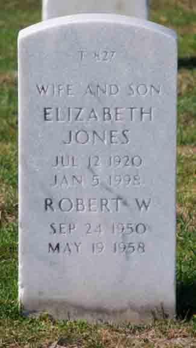

Documentation for Douglas Earl Vining - Elizabeth Ross Jones
Death Data
Gravestone for Douglas Earl Vining, in Golden Gate National Cemetery, San Bruno, San Mateo County, California (from Find A Grave):
Headstone for Elizabeth Ross (Jones) Vining and son Robert, in Golden Gate National Cemetery, San Bruno, San Mateo County, California (from Find A Grave):
